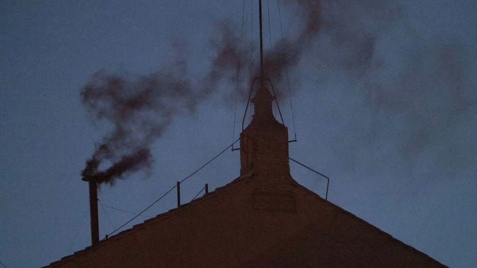

世界苦茶05月08日新闻 | 42条 | 美联储维持利率不变

美联储维持利率不变 | 哥伦比亚拟加入一带一路 | 俄乌彼此密集攻击 | 美国一周内两架F-18战机坠海
习时代
苦茶数据
美元兑人民币：7.23（昨日7.22，前日7.22）
美元兑日元：143.56（昨日143.09，前日143.79）
上证指数：3342（昨日3336，前日3302）
标普500指数：5631（昨日5606，前日5650）
比特币：98566（昨日96818，前日94287）
布伦特原油：61.43（昨日62.51，前日61.04）
中国新闻
• 李家超邀六小龙赴港 ：香港特首李家超在访问浙江期间，邀请包括“杭州六小龙”在内的创新科技企业赴港设立业务。香港创新科技及工业局表明，正积极跟进此事，期望可尽快落实相关安排。综合《星岛日报》和香港01报道，李家超上月出访浙江期间，与“杭州六小龙”企业代表进行座谈交流，并欢迎“杭州六小龙”企业赴港落户或拓展业务，与香港企业和机构加强合作。香港创新科技及工业局局长孙东说，为积极配合国家发展战略，并推动科技与产业创新，港府过去两年根据《香港创新科技发展蓝图》的总体框架，采取了双管齐下的策略，积极培育本地创新科技初创企业，以及吸引企业赴港设立业务。
• 日学者任川大讲席教授 ：四川大学历史文化学院宣布引入日本著名考古学家、美国人文与科学院院士宫本一夫为四川大学文科讲席教授。据澎湃新闻报道，四川大学历史文化学院介绍，2021年起，宫本一夫已在学院担任讲座教授，多次开设专题课。目前，宫本一夫教授已至学院正式开展工作，他将在学院及考古科学中心继续东亚考古、欧亚草原及中西文化交流的综合研究，开设相关课程，并在国际化平台建设及跨学科人才培养等方面持续助力学院发展。
• 丁薛祥谈经济集中领导 ：中共政治局常委、中国国务院副总理丁薛祥说，中共中央加强对经济工作的集中统一领导，推动经济实现质的有效提升和量的合理增长。据新华社报道，丁薛祥星期二出席学习《习近平经济文选》第一卷专题研讨班并作开班报告。丁薛祥说，面对严峻复杂的国际环境和艰巨繁重的国内改革发展稳定任务，中共中央加强对经济工作的集中统一领导。
• 国考补录招录2577人 ：中国国家公务员考试补录将于星期四起报名，计划招录2577人。据中国央视新闻报道，本次补充录用共有27个部门参加，计划招录2577人，其中1900余个计划招录应届高校毕业生。参加了中央机关及其直属机构2025年度考试录用公务员笔试，公共科目笔试成绩合格，但未被原报考职位录用的人员可以报名。
• 中方呼吁印巴保持克制 ：针对印度和巴基斯坦紧张局势升级，中国外交部呼吁两国以和平稳定的大局为重，并表示中国愿为缓解当前紧张局势发挥建设性作用。中国外交部星期三举行例行记者会。有记者提问：印巴局势正快速升级，中方是否与两国进行联系以缓和局势？中国外交部发言人林剑回应称，中国对星期三凌晨印度的军事行动表示遗憾，对目前事态的发展感到担忧。
• 上海乐高乐园7月开园 ：坐落于中国上海的乐高乐园将于7月5日开园，限量年卡即日起开卖。综合澎湃新闻和上观新闻报道，国际知名娱乐景点运营商默林娱乐集团星期三宣布，全球开园规模最大的上海乐高乐园度假区将于7月5日正式开园。星期三早上10时起，含试运营门票的开园限量纪念年卡、限量酒店套餐在其官方微信小程序开售。
• 哥伦比亚拟加入一带一路 ：拉丁美洲国家哥伦比亚计划加入中国的“一带一路”倡议，此举势将加剧哥伦比亚与美国之间原已紧张的关系。据法新社报道，哥伦比亚左翼总统佩特罗星期二说，他将在与中国国家主席习近平举行面对面会晤时，签署“一带一路”意向书。佩特罗访华的具体日期尚未正式公布。佩特罗指出，这份意向书不具有法律约束力，“下届政府将决定这项意向是否成为现实。”他的任期将于明年结束。
亚太印太新闻
• 台民众批政府应对无力 ：台湾在野的国民党公布的最新民调显示，57.2%受访民众认为，面对全球经济风暴，政府拿不出对策，只会搞政治动员。综合台湾《联合报》和ETtoday新闻云报道，国民党星期三召开记者会，并公布最新民调。过去一个月以来，新台币升值10％。国民党智库副执行长凌涛说，面对新台币汇率飙升，以及美国关税政策，有人批评“政府没提出有效对策，都在做大罢免的政治动员”。
• 台湾民调支持增国防费 ：台湾国防安全研究院民调显示，过半台湾民众认同台湾提高国防预算。台湾国防安全研究院星期二公布最新民调显示，中国大陆对台威胁是台湾民众最关注的国安议题，达33%，比例高于少子化危机和经济发展停滞，其中18至29岁的年轻族群感受最为强烈，达36%。但民调显示，约65%受访者认为未来五年内台海发生战争的可能性不高，反映尽管中国大陆持续加强军事威吓，民众对大陆短期内武力攻台的预期逐渐趋于冷静与理性。 （翻评：很有意思，台湾民众对海峡开战的可能性明显过低。）
• 李在明案庭审推迟 ：韩国共同民主党总统候选人李在明涉嫌违反《公职选举法》案重审的首次庭审从原定的5月15日被推迟至大选后的6月18日。韩联社报道，首尔高等法院刑事审判第七庭星期三作出上述决定。法院说，李在明现为总统候选人，为确保选举活动机会公平、审判公正，法院决定将庭审日期推迟至大选日之后。 （翻评：美国模式。）
• 巴国称击落印战机5架 ：巴基斯坦表示击落五架印度战机，以报复印度星期三凌晨对巴基斯坦的军事打击。印度尚未确认战机被击落。巴基斯坦国防部长阿西夫接受彭博社采访时说，击落印度战机并非“敌对行为”，而是为了保卫巴基斯坦领土。阿西夫还说，一些印度士兵已被俘。但他后来告诉萨玛电视台，没有印度士兵被俘。 （翻评：没看到残骸可以暂不相信。现有三架残骸。）
• 联合国忧印巴军事行动 ：联合国秘书长古特雷斯对印度在巴基斯坦及巴控克什米尔地区的军事行动非常担忧，并呼吁印度和巴基斯坦保持最大程度的军事克制。路透社报道，联合国秘书长古特雷斯的发言人在印度袭击巴方后发表声明说，古特雷斯对印度跨越控制线和国际边界的军事行动感到非常担忧。发言人说，古特雷斯呼吁两国保持最大程度的军事克制，“世界承受不起印度和巴基斯坦之间的军事对抗”。
• 巴基斯坦国防部长赫瓦贾·阿西夫表示，如果印度停止军事进攻，巴基斯坦准备撤退： 巴基斯坦国防部长赫瓦贾·阿西夫宣布，只要印度停止正在进行的军事行动，巴基斯坦军方“准备克制”，不再采取进一步行动。此番声明发表之际，正值印度于5月6日至7日夜间对巴基斯坦进行空袭，导致紧张局势加剧。在印度对其领土进行军事打击后，巴基斯坦国防部长赫瓦贾·阿西夫在接受彭博电视台采访时表示：“我们必须自卫。”
• 美制裁缅甸军关联组织 ：美国对缅甸一个与军政府有关联的民兵组织实施制裁，指控他们为网络诈骗、人口贩卖和跨境走私提供便利。美国财政部星期一发声明宣布，对克伦民族军、该组织领导人绍奇杜、以及他的两个儿子绍图埃穆和绍奇奇实施经济制裁，冻结他们可能持有的全部美国资产，并禁止美国人与他们做生意。克伦民族军的总部位于妙瓦底地区的水沟谷。美财政部指该民兵组织向网络犯罪集团租赁土地，并提供支持，包括为诈骗窝点提供安保和电力，以及协助人口贩运和走私。
科技新闻
• 英伟达CEO谈AI市场 ：美国晶片巨头英伟达首席执行官黄仁勋说，中国人工智能晶片市场可能将在未来两到三年内达到500亿美元，错失这一市场将是“巨大的损失”。黄仁勋星期二接受美国消费者新闻与商业频道采访时说，作为一家美国公司，向中国销售产品将能为美国带来收入、税收，并在美国创造大量就业机会。但黄仁勋也说：“我们必须保持灵活应变，无论政府制定什么政策，只要是符合国家利益的，我们都会支持。”
• OpenAI拓展海外基础设施 ：OpenAI计划在美国以外投资开发运行人工智能系统所需的基础设施，在其专注于美国人工智能数据中心的星际之门项目基础上进一步推进。根据周三启动的新计划，ChatGPT开发商将与各国政府合作，协助开展扩建数据中心容量等工作。公司还将帮助各国根据特定语言和本地需求定制OpenAI的产品，这是首席执行官萨姆·奥尔特曼所称的 “商业外交”努力的一部分。OpenAI表示，这些合作项目的资金将来自OpenAI以及各国政府。该公司的目标是初期推进十个国际项目，但拒绝透露项目地点。该公司表示，将寻求与以民主友好的方式使用OpenAI技术的国家合作。
• 美议员提案禁官员发币 ：在突然撤回对参议院首个稳定币监管法案的支持后，参议院民主党周二宣布，他们将提出一项新法案，禁止美联邦官员及其家人发行数字资产 —— 该法案针对唐纳德·特朗普及其家人目前持有的稳定币和模因币。参议员说：“目前，那些希望对总统产生影响力的人可以通过购买他拥有或控制的加密货币来让他个人致富。” 向参议院提出该法案的俄勒冈州民主党议员默克利说：“这是一个极其腐败的图谋。它危及我们的国家安全，并侵蚀公众对政府的信任。我们必须立即终结这种腐败。”《终结加密货币腐败法案》的出台是为了回应民主党内部的担忧，即此前得到两党大力支持的GENIUS法案不足以防止腐败。
财经新闻
• 美联储维持利率不变 ：美国联邦储备局星期三宣布，将联邦基金利率目标区间维持在4.25%至4.50%之间不变。这是自今年1月以来，美联储连续第三次决定维持利率不变。美联储在为期两天的货币政策例会后发表声明说，近几个月来美国失业率稳定在较低水平，劳动力市场状况依然稳固，但通货膨胀仍一定程度上处于高位。美联储认为，经济前景的不确定性进一步增加。美联储还指出，“失业率上升和通胀加剧的风险有所增加”，这是此前声明中没有的内容，体现出美联储对最新经济形势的担忧。 （翻评：这就是美元还能维持的根本原因。）
• 比亚迪撤回智利建厂 ：据智利《金融日报》报道，中国汽车制造商比亚迪和金属集团青山控股均已通知智利当局，他们将撤回在智利建设锂加工厂的计划。路透社引述该报星期三的报道，比亚迪已向智利国家资产部提交撤回意向，而青山控股则告知智利发展机构Corfo，将不再推进该项目。青山集团向路透社证实已撤回计划，而比亚迪拒绝置评。
• 越南对美出口创新高 ：美越两国就削减越南对美贸易顺差展开磋商、加强打击经越南转运中国货物之际，今年4月越南自中国进口和对美出口额双双达到疫情后的历史新高。据越南统计机构数据，今年前四个月越南对美贸易顺差同比扩大近25%，目前已位居全球最高之列。路透社报道称，多名行业高管表示，由于担心美方未来可能加征关税，越南制造商正积极加快对美出口。越南海关数据显示，今年4月，越南对美出口超过120亿美元，同比大幅增长34%，创冠病疫情后的最高水平。
• 中企占手游收入近四成 ：市场分析机构SensorTower数据显示，4月有33家中国厂商入围全球手游发行商收入榜前100，合计收入20亿美元占本期全球TOP100手游发行商收入的38.4%。SensorTower星期三发布2025年4月中国手游发行商全球收入排行榜。4月手游发行商收入前100中有33家中国厂商，相比上月36个中国厂商入围有所下降，但合计收入20亿美元，与上月持平。中国厂商4月收入占比38.4%，环比上升1.5个百分点。4月排名前五的中国手游厂商为腾讯、点点互动、网易、米哈游和柠檬微趣。
• 中对印氯氰菊酯征税 ：中国商务部宣布，将对原产于印度的进口氯氰菊酯征收反倾销税，税率为48.4%至166.2%，期限五年。中国商务部官网星期二发布公告，对原产于印度的进口氯氰菊酯反倾销调查最终认定，原产于印度的进口氯氰菊酯存在倾销。中国国务院关税税则委员会根据商务部的建议作出决定，自星期三起，对被调查产品征收反倾销税。对印度各公司征收的反倾销税税率在48.4%至166.2%之间。
• 鸿海三菱合作造电动车 ：台湾鸿海集团的电动车部门与日本三菱汽车公司星期三宣布，双方已原则上达成协议，由鸿海开发并向三菱汽车供应一款电动车型。综合法新社和台湾联合报报道，这款供应给日本三菱汽车的电动车型，将由裕隆和鸿海合资的鸿华先进负责开发，并由裕隆汽车三义工厂负责生产，计划于2026年下半年在澳洲与新西兰上市。这是鸿海在快速增长的电动车领域签下的首个重大合约。分析认为，随着汽车科技含量不断提高，许多日本汽车制造商将需要寻找新的合作伙伴以保持竞争力。
• 黄金价格因谈判下跌 ：美中贸易谈判的乐观情绪削弱了对避险资产的需求，金价星期三下跌。据路透社报道，截至格林尼治标准时间6点28分，现货黄金下跌1.2%，至每安士3389.37美元。美国黄金期货下跌0.7%，至3398.10美元。黄金价格星期二曾上涨近3%。
• 马来对华征PET反倾销税 ：马来西亚政府宣布，对原产自中国和印度尼西亚的聚对苯二甲酸乙二醇酯塑料产品征收反倾销税。马来西亚投资、贸易和工业部星期二发文告宣布，从星期三起对原产自中国和印尼的PET塑料产品征收反倾销税，为期五年。根据文告，中国的反倾销税是2.29%至11.74%，印尼的反倾销税则达37.44%。
• 央行推消费养老贷款 ：中国人民银行将设立5000亿元人民币服务消费和养老再贷款，以支持消费市场。中国人民银行行长潘功胜星期三在国新办举行的新闻发布会上宣布设立服务消费和养老再贷款，引导商业银行加大对服务消费与养老的信贷支持，加大消费重点领域低成本资金支持。潘功胜还说，将优化两项支持资本市场的货币政策工具，将证券、基金、保险公司互换便利5000亿元和股票回购增持再贷款3000亿元额度合并使用，总额度8000亿元。
• 斯坦谈中美谈判预期 ：美中贸易全国委员会会长斯坦表示，外界对本周稍晚在瑞士举行的中美贸易谈判的合理预期是，双方可能会在谈判后暂停实施关税。斯坦星期三接受彭博电视采访时指出，中美贸易谈判最糟糕的结果是谈判破裂，并且没有宣布未来的谈判计划。他说，一个合理的预期是，像美国对其他国家所采取的做法一样，“双方可以在谈判期间暂停征收关税90天”。如果实际结果低于这一期望，将会令市场和观察者失望。斯坦说，美国公司需要看到市场的确定性，他们不希望关税和其他因素进一步复杂化本已困难的中美经济关系。美中贸易全国委员会是一个由270多家在中国有业务的美国公司组成的私营组织。
• 卡塔尔中石化或投宁德 ：卡塔尔投资局和中国石化等据悉正考虑投资宁德时代在香港的IPO。据彭博社报道，不愿公开身份的知情人士说，卡塔尔投资局和中国石化可能寻求在此次发行中买入价值数亿美元的股票。他们还说，另类资产管理公司高瓴投资也在考虑参与。
• 美国考虑给予中国进口汽车座椅和婴儿车关税豁免 ：美国财长贝森特表示，特朗普政府正在考虑对从中国进口的汽车座椅、婴儿车、婴儿床和其他儿童出行必需品免征高达145%的关税。美国总统特朗普表示，他将考虑具体行业提出的关税豁免请求，但他表示，他更倾向于让贸易惩罚更广泛、更简单。特朗普是在回答他是否会对汽车座椅等婴儿产品免征关税的问题时说这番话的。
• 欧盟将于周四宣布针对美国关税的下一步反制措施 ：欧盟贸易执委谢夫乔维奇表示，如果与华盛顿的谈判失败，欧盟执委会将于周四宣布针对美国关税的下一步反制措施的细节。据英国金融时报报道，欧盟考虑对波音飞机征收关税。美国副总统万斯表示，美国和欧洲之间的讨论仍在进行中。他提到，华盛顿正在敦促欧盟降低关税和监管壁垒，并向美国武器制造商敞开大门。
• 中国7家主要光伏企业合计损益首陷亏损： 中国7家主要光伏电池企业的2024财年财报显示，自有可比数据的2017年以来，合计的最终损益首次出现亏损。从全球光伏电池板的出货量来看，在全球前十家企业中，中国企业占九家。日本经济新闻汇总了其中以光伏电池相关为主业的中国7家上市企业2024财年的财报，结果显示最终损益的合计为亏损270亿元。在2023财年，七家企业全部实现最终盈利，合计金额达到418亿元。不过，2024财年情况发生改变，全球市场份额居第二位的隆基绿能科技等五家企业出现巨额亏损。
俄乌战争
• 乌无人机袭莫斯科机场 ：俄罗斯星期三说，在纪念苏联战胜纳粹德国80周年之际，乌克兰无人机夜间袭击莫斯科，暴露了基辅正在实施“恐怖主义行为”。路透社报道，莫斯科市长说，俄罗斯防空部队星期三击落14架乌克兰无人机，这是基辅连续第三天袭击俄罗斯首都。在中国国家主席习近平即将访俄的几个小时前，无人机迫使莫斯科大部分机场关闭。基辅已明确表示反对习近平此次访问。
• 乌克兰官员称，俄罗斯5月6日晚对乌克兰首都基辅发动无人机和导弹袭击，造成2人死亡、7人受伤： 乌克兰已连续3晚对俄罗斯首都莫斯科发动无人机袭击。俄罗斯官员称，俄罗斯防空部队5月6日晚摧毁至少14架无人机。没有损坏报告。
• 法德支持乌克兰停火 ：法国总统马克龙星期三在爱丽舍宫与德国新任总理默茨共同发表讲话时说，法国和德国正密切合作，坚定支持乌克兰，并将继续努力实现为期30天的停火。路透社报道，马克龙说：“只有一个问题需要回答：俄罗斯是否准备好至少停火30天，并以此推进持久的停火？俄罗斯总统是否会信守诺言，尤其是在与美国政府会谈时做出的承诺？”默茨说，他希望乌克兰可以很快取得永久停火协议。
• 习近平发文谈中俄关系 ：中国国家主席习近平在俄罗斯媒体发表署名文章称，中俄关系具有清晰历史逻辑、强大内生动力、深厚文明底蕴，不针对第三方，也不受制于任何第三方。双方要共同抵制任何干扰破坏中俄友谊和互信的图谋，不为一时一事所惑，不为风高浪急所扰。据新华社，习近平星期三在《俄罗斯报》发表题为《以史为鉴 共创未来》的署名文章。习近平说：“在这‘梨花开遍了天涯’的季节，我即将对俄罗斯进行国事访问，并出席纪念苏联伟大卫国战争胜利80周年庆典，同英雄的俄罗斯人民一道重温历史、缅怀先烈。”习近平在文章中提到，在世界反法西斯战争中，中俄两国人民相互支援。中国抗日战争时期，苏联援华航空队在南京、武汉、重庆等地阻击日寇，而中共地下工作者也为苏联在伟大卫国战争的危急关头，提供一手情报。
• 拜登批特朗普对俄绥靖 ：美国前总统拜登说，特朗普向乌克兰施压，要求乌克兰割让领土给俄罗斯的行为是“现代绥靖政策”，而莫斯科不会因此满意并收手。路透社报道，拜登在星期三播出的英国广播公司采访中说，俄罗斯总统普京认为乌克兰是“俄罗斯母亲”的一部分，“任何认为他会停止的人都是愚蠢的”。这是拜登离开白宫后的首次采访。他说：“我只是不明白，人们怎么会认为，如果我们允许一个独裁者、一个暴徒决定占领不属于他的大片土地，他就能满足。”
• 中俄再谈西伯利亚管道 ：中国国家主席习近平与俄罗斯总统普京本周会谈，据报将重新讨论此前陷入僵局的“西伯利亚力量2号”管道项目。彭博社报道称，莫斯科长期以来一直希望就西伯利亚力量2号天然气管道达成协议，以加强两国关系，同时增加对中国的天然气出口。自2022年俄乌冲突爆发以来，俄罗斯对欧洲市场的天然气出口急剧下降，预计到2027年可能完全中断，因此俄方对中国市场的依赖程度进一步提升。相比之下，在推动能源进口多元化和发展替代能源的背景下，北京一直未将与俄方达成协议视为当务之急。
• 地缘政治格局调整，乌克兰考虑从美元转向欧元 ：乌克兰央行总裁Andriy Pyshnyi告诉路透，在全球贸易碎片化以及乌克兰与欧洲关系日益密切的背景下，乌克兰正开始考虑脱离美元，可能将其货币与欧元更紧密地挂钩。Pyshnyi表示，加入欧盟的可能性、"欧盟在确保我们国防能力方面的作用增强、全球市场波动加剧以及全球贸易碎片化的可能性"，正让该央行不得不重新考虑是否应将欧元而不是美元作为乌克兰货币格里夫纳的参考货币。
其他新闻
• 美国和以色列讨论建立美国主导的加沙临时管理当局 ：据五位知情人士透露，美国和以色列已经讨论了建立一个由华盛顿主导的战后加沙临时管理当局的可能性。消息人士称，此次“高层”磋商的核心是建立一个由美国官员主导的过渡政府，监督加沙局势，直至实现非军事化和稳定，并出现一个可行的巴勒斯坦管理当局。特朗普表示，未来一天将公布更多有关释放人质协议和加沙停火的潜在新提案的信息。
• 胡塞称停火不含以色列 ：也门胡塞武装星期三说，与美国达成的停火协议并不包括以色列相关的内容。这暗示胡塞武装对航运的袭击不会完全停止。路透社报道，美国总统特朗普星期二宣布，美国将停止轰炸胡塞武装，并称胡塞武装已同意停止袭击美国船只。随后，阿曼说，曾介入斡旋，促成这项停火协议，以停止对美国船只的袭击。
• 六国反对改动加沙局势 ：六个欧洲国家星期三表态，坚决反对任何改变加沙地带的人口组成或领土的行为。此前，以色列扩大了在加沙地带的军事行动。法新社报道，西班牙、冰岛、爱尔兰、卢森堡、挪威和斯洛文尼亚外交部长在一份联合声明中说，以色列的计划“将标志着战争新的危险升级”。以色列于3月重启对哈马斯的袭击，结束了为期两个月的停火。
• 美F-18战机坠红海 ：两名不愿具名的美国官员披露，一架美国F/A-18超级大黄蜂攻击战机在红海坠毁。路透社报道，一架美国F-18战机星期二在哈里·杜鲁门号航空母舰的飞行甲板上意外滑落，坠入红海。这是一周内第二次发生此类事件。